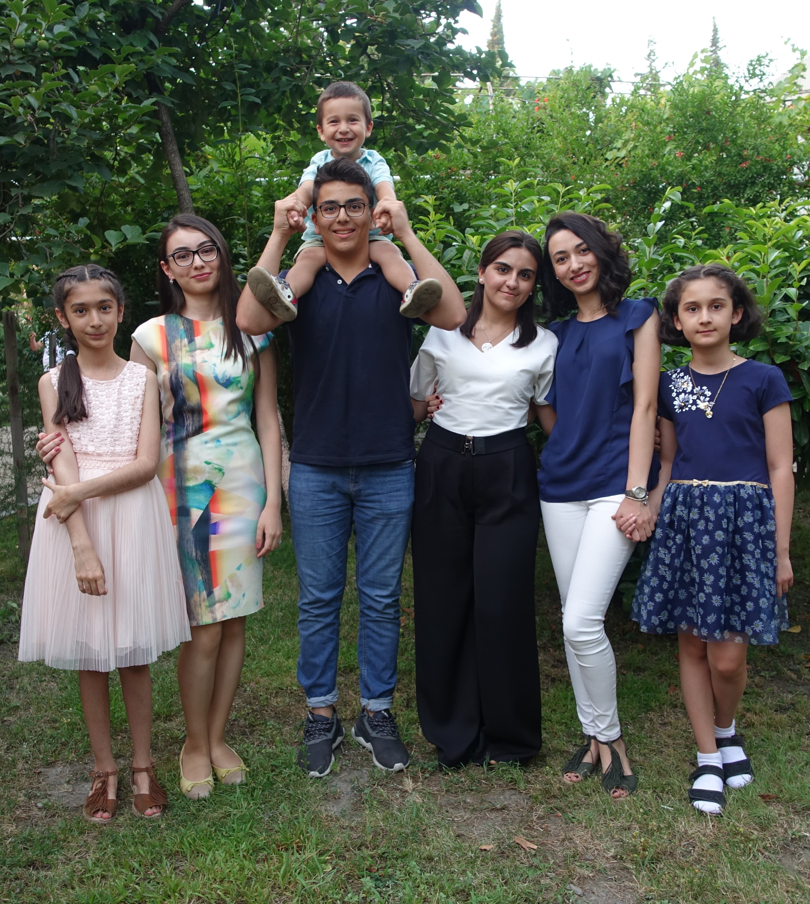

Nəvələri Oruc Orucov haqqında:
Не зря говорят, что те, кого мы любим, никогда нас не покидают. И в наших воспоминаниях, дедушка, ты будешь жив: в треске костра на Новруз, в завитках виноградных лоз, в аромате комнаты, когда-то заполненной бочками вина, закупоренных надувными шарами. В звуке чёрной лестницы и в тех панамах, что ты носил.
Первое, что приходит в голову, когда слышу имя дедушки, это безвозмездная помощь и поддержка. Дедушка и в правду был и останется настоящим примером для подражания.